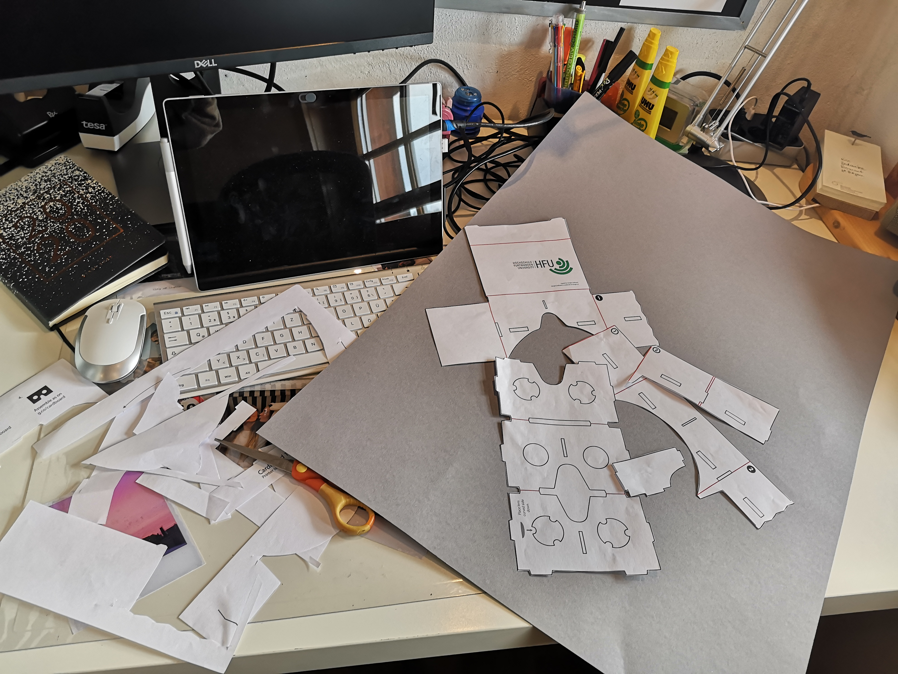
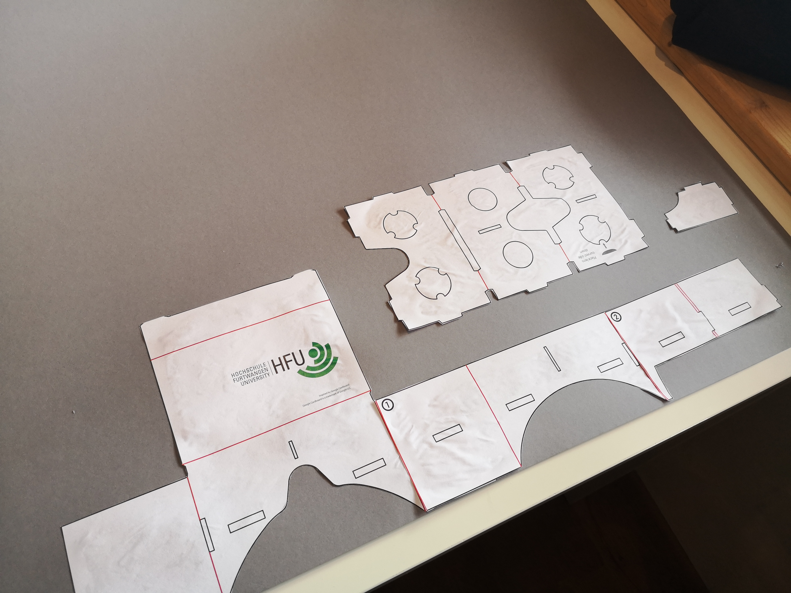
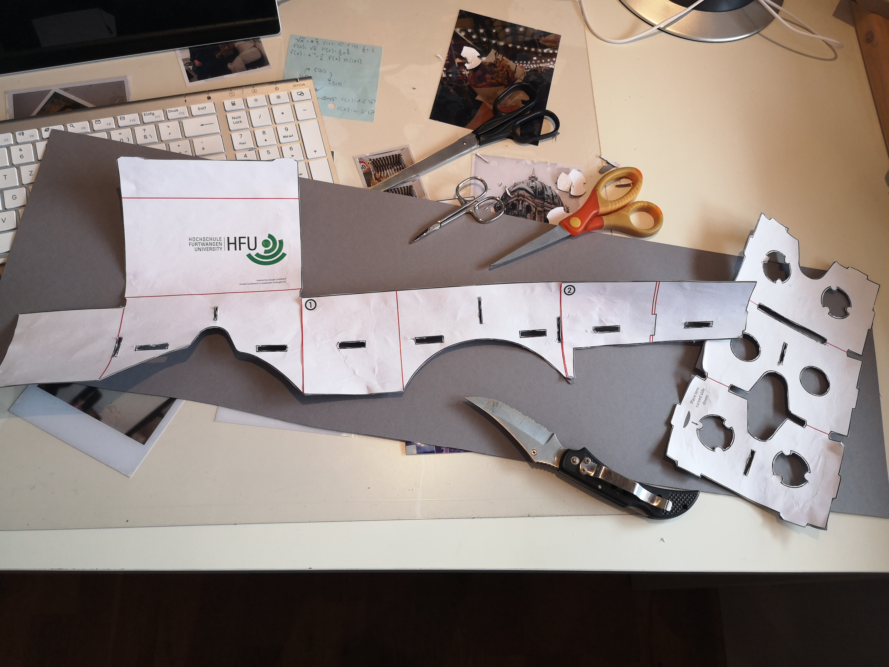
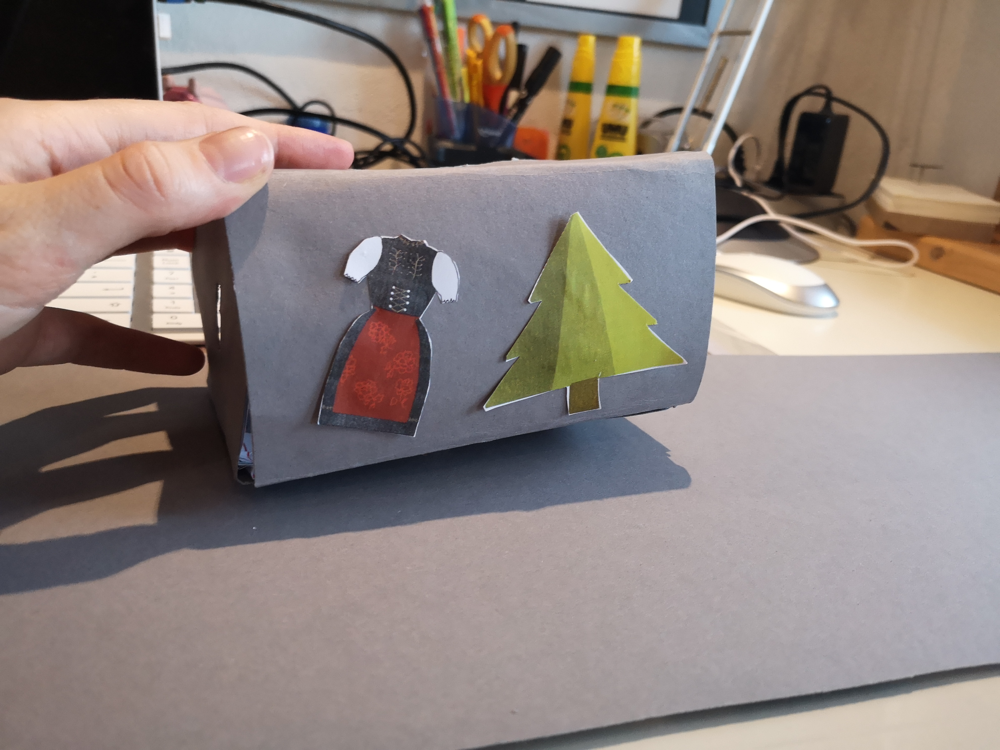
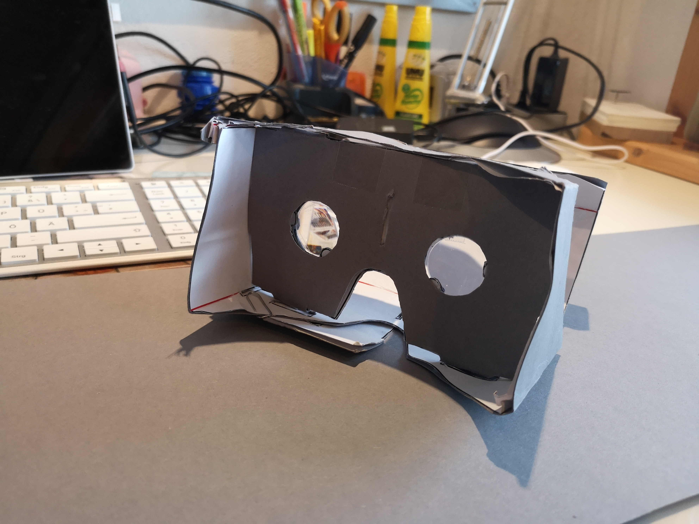

Dokumentation - VR Cardboard Brille
Schritt 1: Vorbereitung
Im ersten Schritt habe ich alle notwendigen Bastelutensillien für die Cardboard-Brille zusammengesucht.
Dazu gehörten:
- Graue Pappe
- Schere, Kleber & Tesafilm
- Papiervorlage aus dem Bastelpaket
- Linsen aus dem Bastelpaket
- Büroklammern

Schritt 2: Ausschneiden
Danach ging es an das Ausschneiden der Papiervorlage.

Schritt 3: Aufkleben und Ausschneiden
Im nächsten Schritt habe ich die ausgeschnittene Papiervorlage auf die Pappe geklebt und das Ganze erneut ausgeschnitten. Diesmal dann auch mit allen Aussparungen, was jedoch etwas komplitzierter war als ich dachte und viel Zeit gekostet hat.


Schritt 4: Personalisieren und Zusammenfalten
Nun ging es auch schon an das zusammenfalten. Bis ich den richtigen Dreh raus hatte, habe ich ein paar Handgriffe benötigt. Das Ganze habe ich im nächsten Schritt mit Büroklammern fixiert. Die Linsen habe ich provisorisch mit Tesafilm befestigt, damit sie nicht herausfallen. Um dem Ganzen meine Note zu geben, habe ich noch zwei selbstgemalte Illustrationen von mir ausgedruckt, ausgeschnitten und auf das VR-Cardboard geklebt. (Ich musste das Video für den Upload auf Github leider ganz schön komprimieren)
Das Ergebnis

